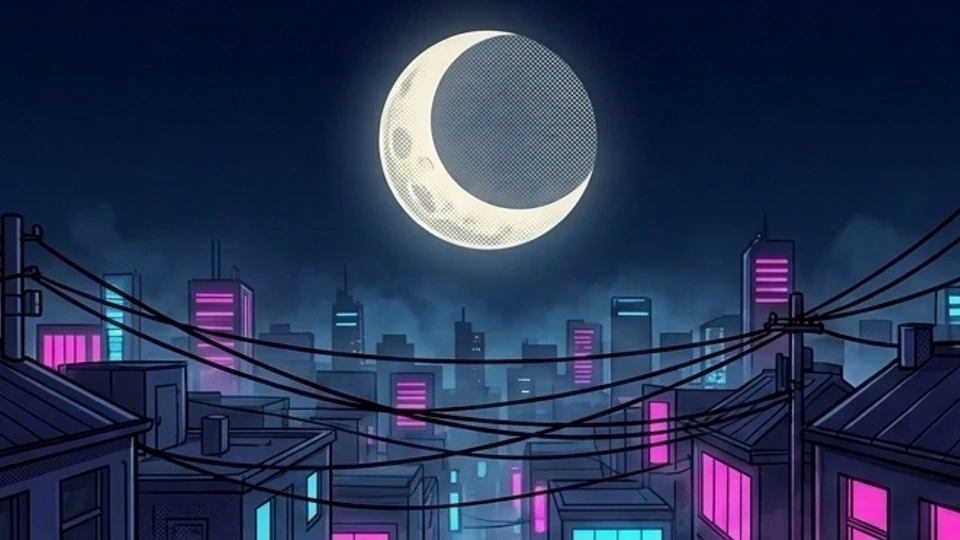
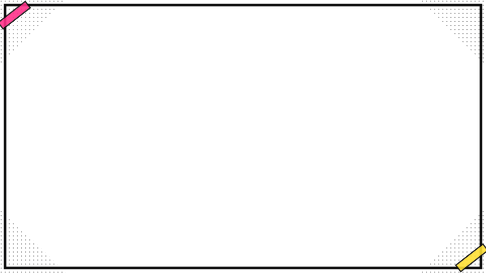

NARRATOR
No carrier wave on the upper band yet—only rooftop wind and iron cables.
01 · MOON CITY ROOFTOP · ERA THRESHOLD: CAPTURE
STORYBOARD PANELS (P01–P12)
Keys: Space Play/Pause · ←/→ Frame · [/] Panel · R Replay · S 0.45x · G Static Page · M Reduced Motion · I CastSTATIC COMIC PAGE — EP-LAB-01: WHEN THE MOON RISES, WE SHARE A MESSAGE
All 12 illustrated panels laid out as a readable static punk-zine comic spread. Live HTML speech bubbles and captions; animation completely stopped.